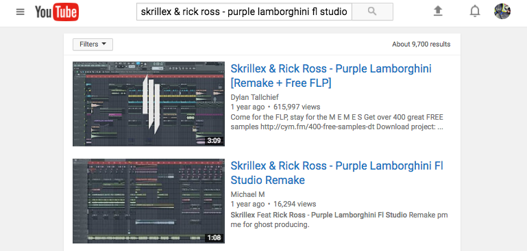

I have been making music for a long time. In the beginning, music was just a hobby and then it became a passion. After, months of exploring music production I came to a point that I had to implement a production software to level up the quality of my music. Some of you might relate to my case, other might be just tired of using the same production software. I will explain using my experience with the software I used. They are Ableton live and Fruity loops studio. Both are amazing software, and they can serve your purpose.
Fruit Loops Studio pros and cons

FL Studio possesses many advantages. It allows you to become a pro without too much. Let's start mention all of the FL studio advantages one by one. First, It's very dynamic, and the drag and drop function is very practical. In FL Studio, you can create many forms of the same beat and drop easily into the main playlist. Eg: You create a simple beat, but you want to have multiple types of drums for different part of the beat, you can just copy it and eliminate the drum in the second version and then drop it on the main playlist. Second, it's very easy to use and has a big community. If you are new in the music production you can learn it fast. Just to show you how big is the FL Studio community, just google any beat you want to make and add 'flp' or 'fl studio' and you will find the remake of the beat
However, there are some disadvantages that Fruity loops have. The main one is that it might require too much of your computer power. (CPU, RAM, GRAPHIC CARD, and whatever makes the computer work). If your computer does not have the power necessary, it might make some noise, which is not convenient, especially when you are trying to equalize the beat. The second, which for me is the biggest. There is no complete version for MAC. If you are Apple fanboy/girl you will have to install windows. Otherwise, you won't get the full pie with Mac version
Ableton Live pros and cons

Ableton live also has a lot advantage. The first one, it has a version for both windows and mac, which is a big plus. Secondly, when you are producing there is less noise, which means less need for mastering and equalizing. The environment is less mess comparing to FL Studio. Another big advantage is that you can use it for a live show. You just connect your keypad and add some sound or music to each one and you ready to be the next Skrillex, just kidding, you won't get to that level without hard work.
However, it also has its own disadvantage. The first one, you gonna need musical instrument if you want to be good with Ableton Live. In FL Studio, music instrument is not a must, if you want to be good at it, but the same doesn't apply to Ableton Live. The second and the biggest disadvantage is the community. Ableton Live has a small community compared to FL Studio, which makes difficult to discover how the new hits are made.
What make your production quality skyrocket

You must have a good headphone or an audio system. The best one out there in the market are:
Scarlet production pack. It's affordable and you can equalize and listen to every single part of the beat without missing one part.